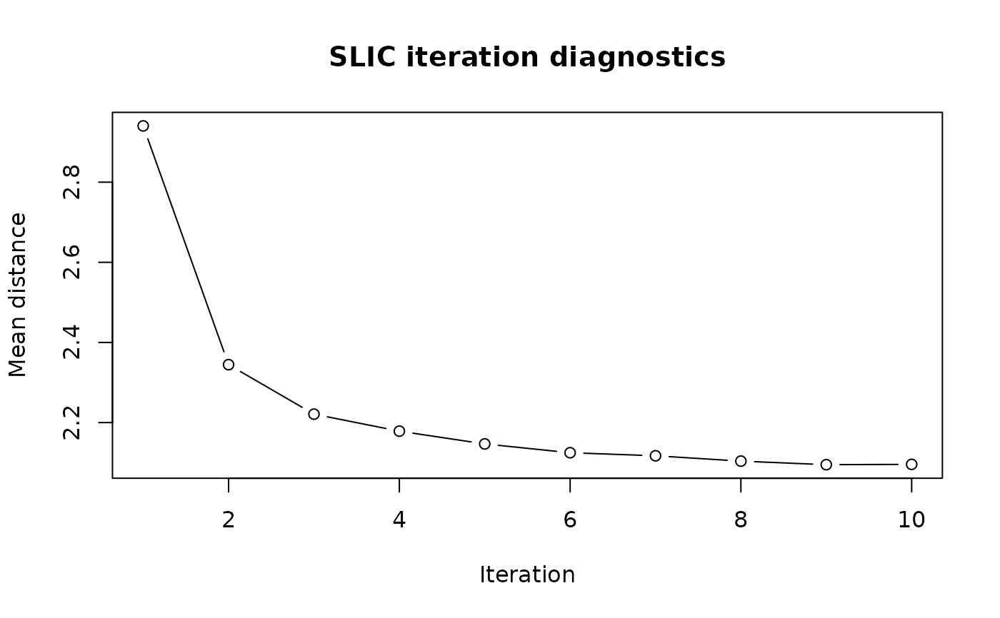

Plot mean distance across iterations for a supercells run
Examples
library(supercells)
vol = terra::rast(system.file("raster/volcano.tif", package = "supercells"))
vol_sc = sc_slic_points(vol, step = 8, compactness = 1, iter_diagnostics = TRUE)
sc_plot_iter_diagnostics(vol_sc)
